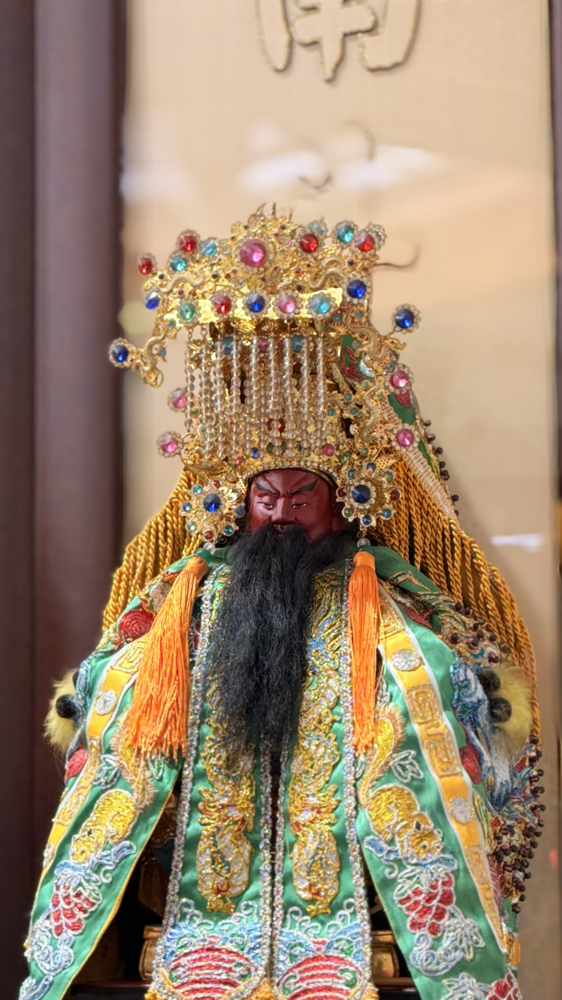

以道教正信為根本，在現代社會協助信眾安定身心、明辨方向
信仰不是遠離人世，而是在日常生活中修心修德
社團法人台灣三聖道教信仰協會
| 道場名稱 | 三聖宮 |
| 法人名稱 | 社團法人台灣三聖道教信仰協會 |
| 道場地址 | 新北市樹林區山佳 |
| 主神信仰 | 開臺聖王・關聖帝君・天上聖母 |
| 籌備現況 | 籌備中 2026 |
歡迎透過以下方式與本會聯繫，查詢入會、問事、活動或一般事宜
誠心求籤，籤詩是神明的提醒，而非命運的決定
歡迎線上預約以下服務，我們將盡快與您聯繫確認
協會運作制度說明・籌備甘特圖・文件管理・Google Drive 整合
| 法人名稱 | 社團法人台灣三聖道教信仰協會 |
| 道場名稱 | 三聖宮 |
| 主管機關 | 新北市政府社會局（人民團體法） |
| 會址 | 新北市樹林區山佳（三聖宮道場所在地） |
| 初期會員 | 體制委員30名（家庭戶代表制） |
| 會計年度 | 每年1月1日至12月31日 |